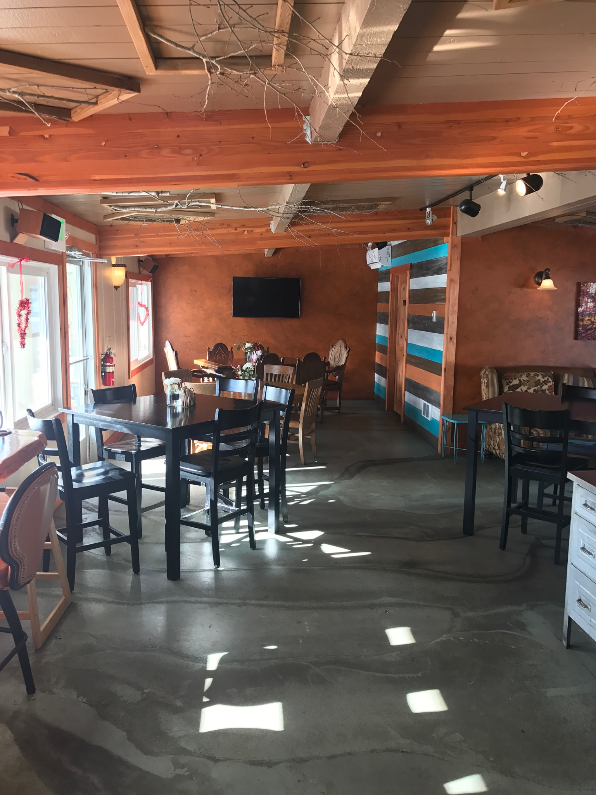

<div class="journey">
  <div class="journey-container">
    <div class="journey-fluff-container">
      <h2 class="journey-fluff">Grab a buddy and some car snacks, <br> get comfy and enjoy the ride.</h2>
      <p id="journey-fluff-desc">There is no future in a front, Skalitude is a 4+ hour car ride from Seattle, including stops. There are multiple routes to get there though we recommend taking the 90 E route through the Snoqualmie Pass. It is a gorgeous drive that helps shed the weight of city life. Rambling through mountain passes, along the Colombia River and through the fruit orchards of Eastern Washington, the scenery provides a perfect backdrop for the journey.
        <br>
        <br>
        Below is a recommendation of a few places to stop along the way.</p>
    </div>

    <div class="journey-stops-container">
      <h2 class="journey-stops-heading">Cle Elum</h2>
      <p class="journey-stops-direc">– This is the first major turn off on the journey. Roughly after about 80 miles on the 90 E you will exit toward WA-970.</p>
      <div class="journey-stops-image-container">
        
        
      </div>
      <p class="journey-stops-address"><a href="#" class="journey-stops-address-names">Gunnar’s Bistro</a>- 811 WA-970 # 6 Cle Elum 98922</p>
      <p class="journey-stops-desc">Cute little café close to the exit on the right hand side of the street., they have coffee, tea, sandos, and a clean bathroom.</p>
    </div>

    <!-- <div class="journey-stops-container">
      <h2 class="journey-stops-heading"></h2>
      <p class="journey-stops-direc"></p>
      
      <p class="journey-stops-address"><a href="#" class="journey-stops-address-names"></a></p>
      <p class="journey-stops-desc"></p>
    </div> -->


  </div>
</div>
